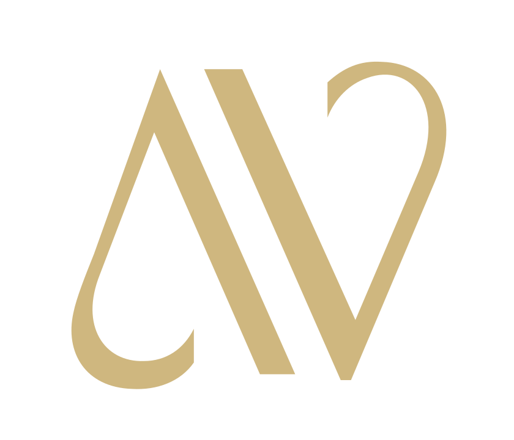
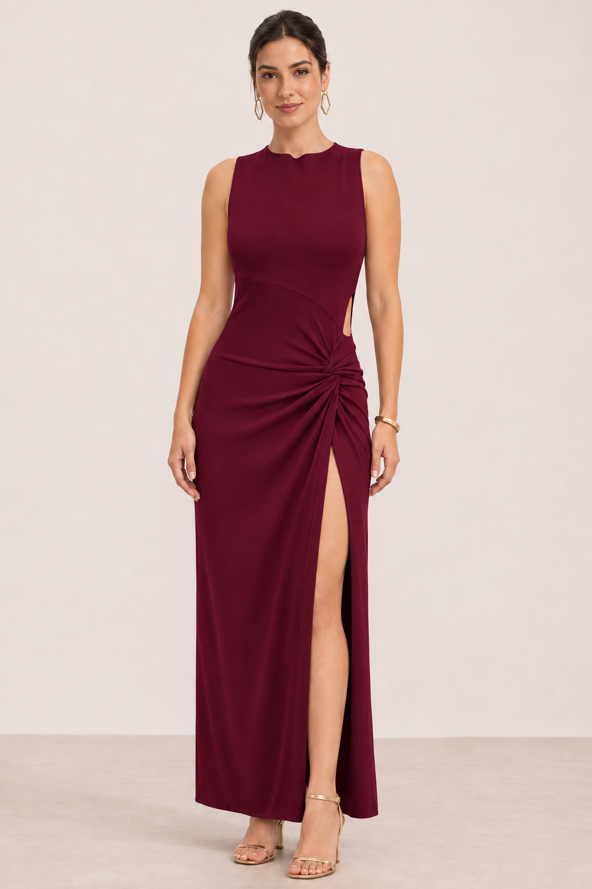
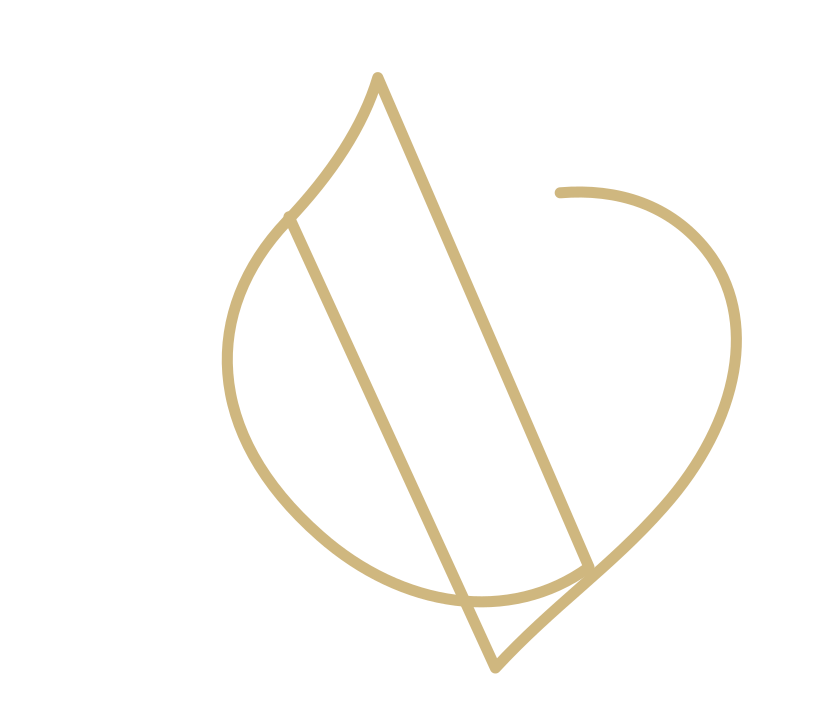
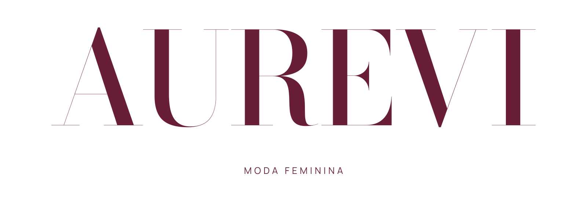
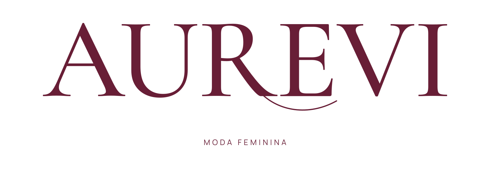
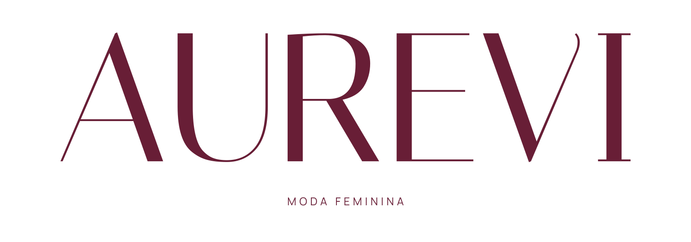
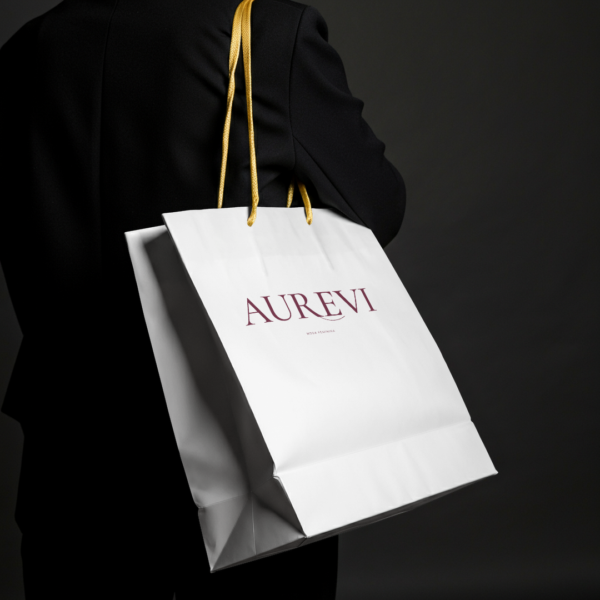
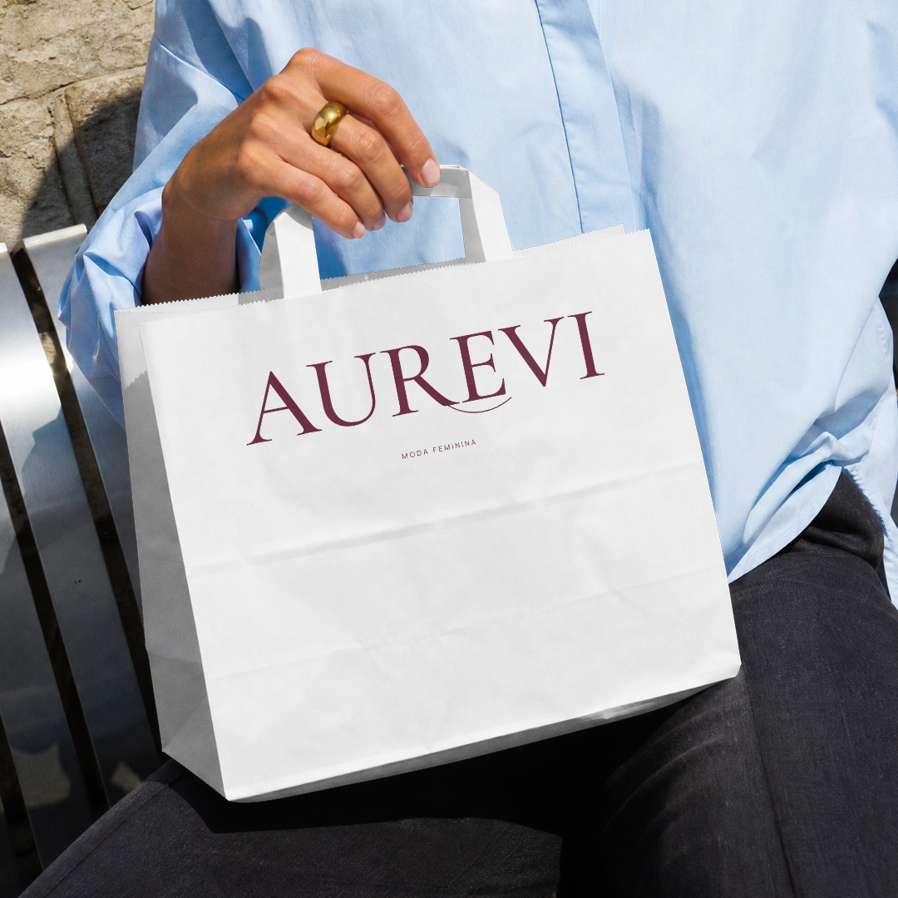
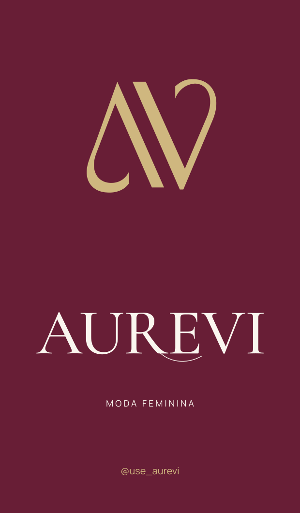

01 · AV com contraste
Diagonais separadas, diferença entre traços finos e grossos e terminações curvas. As iniciais ficam mais explícitas.


Uma direção em bordô, dourado e marfim.

ESTUDO EDITORIAL · IMAGEM GERADA POR IAPresença, feminilidade e profundidade.
Uma ligação com “Aure” nos detalhes e na assinatura.
Leitura clara e espaço para valorizar a roupa.
O dourado pode aparecer no símbolo, em uma linha de acabamento, em metais ou na embalagem.
Vida no movimento da roupa, na mulher que veste e nas ocasiões que ela escolhe viver.
Códigos propostos a partir da referência enviada. Tecido fotografado e luz mudam a aparência da cor; o acabamento metálico precisa de material e prova próprios.
Diagonais separadas, diferença entre traços finos e grossos e terminações curvas. As iniciais ficam mais explícitas.

Curvas contínuas e linhas mais finas. Uma leitura abstrata, próxima de uma assinatura ou de um detalhe bordado.
Estudos desenhados para a Aurevi a partir da linguagem das referências. O primeiro favorece reconhecimento das iniciais; o segundo pede avaliação de reconhecimento em tamanhos pequenos.

Contraste alto e presença de moda. O traço fino exige cuidado nas reduções.

Serifas elegantes, espaçamento trabalhado e um gesto no R para acrescentar personalidade.

Desenho alongado e leve, com formas particulares no A e no V.
Três estudos para comparar na mesma paleta. O desenho do nome e a escolha entre os dois AV ainda estão em avaliação; esta apresentação não pressupõe aprovação das sócias.



Mockups renderizados no Kittl com a escrita 02. A tag é um estudo plano de aplicação. Para produção, definir papel, medidas e acabamento com o fornecedor.
Vestido ajustado, drapeado lateral, fenda e acessórios. Uma imagem que apresenta a construção e a presença do look.
Modelo diferente da referência inicial, fundo liso de estúdio e luz limpa. O vestido foi alterado para bordô para conversar com a paleta.
A amostra da Donna reúne jeans, conjuntos e vestidos mais produzidos. A Aurevi pode mostrar essa variedade com fotos de roupa real, planos de caimento e detalhes.
Esta imagem é um estudo para apresentação. Na venda, conferir cor, tecido, modelagem e acabamento com o produto real.
A direção de cores vem da preferência apresentada. O marfim mantém o sistema leve e legível.
Minha recomendação inicial combina o gesto no R com o AV de traços contrastantes. O AV 02 fica como alternativa mais abstrata para comparar.
Qual escrita representa melhor a marca e qual AV fica mais reconhecível para vocês. A partir dessas escolhas, aplicar a direção nos posts e no restante do kit.
Referências de produto: Donna no Instagram e catálogo Donna, amostra pública consultada com Playwright em 04/11/2026. Fotos da concorrente não compõem esta apresentação.